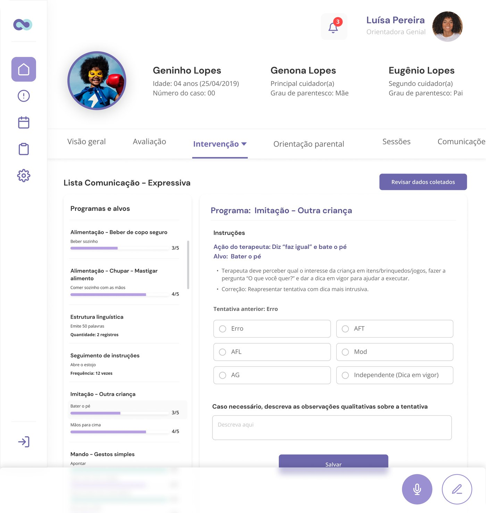
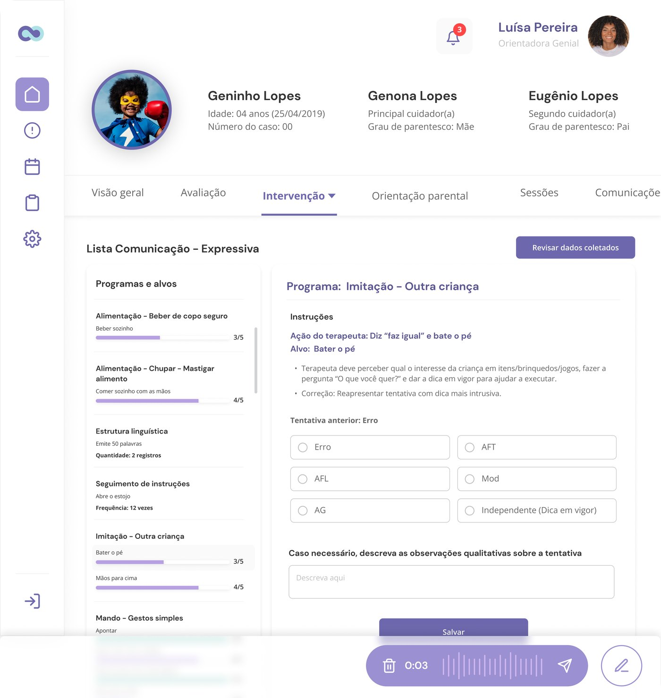
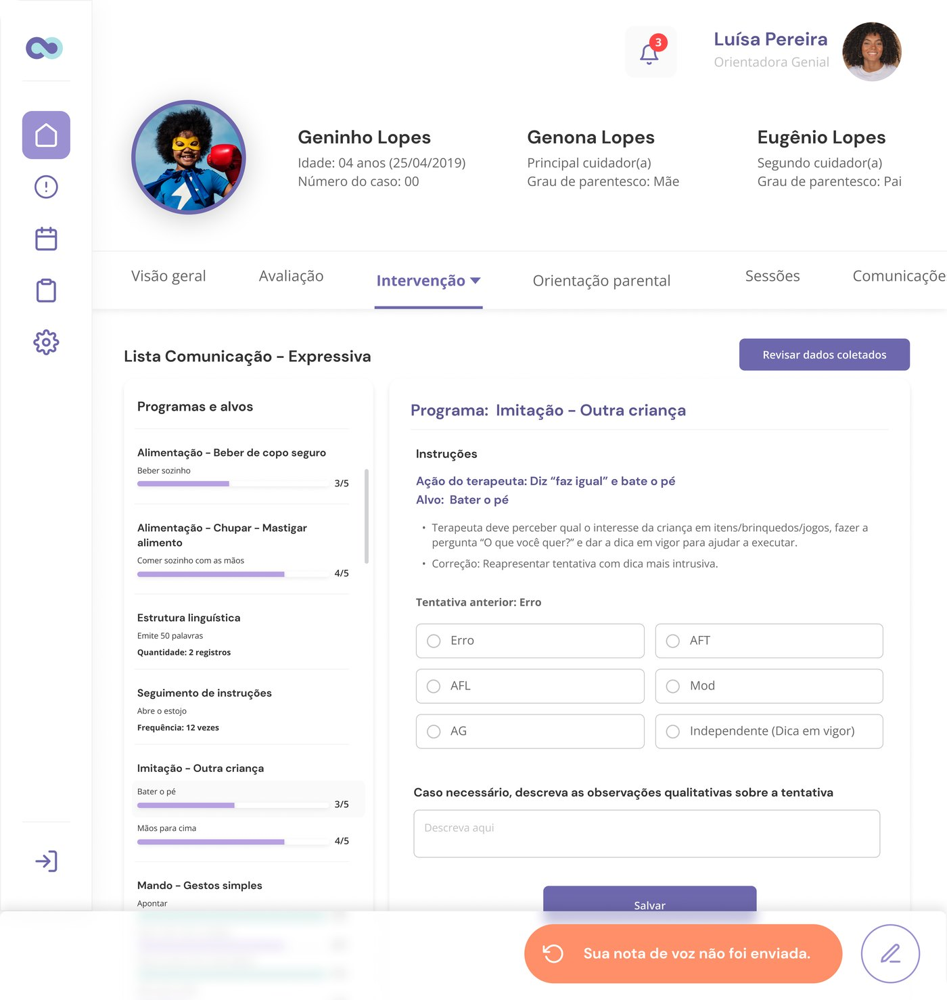
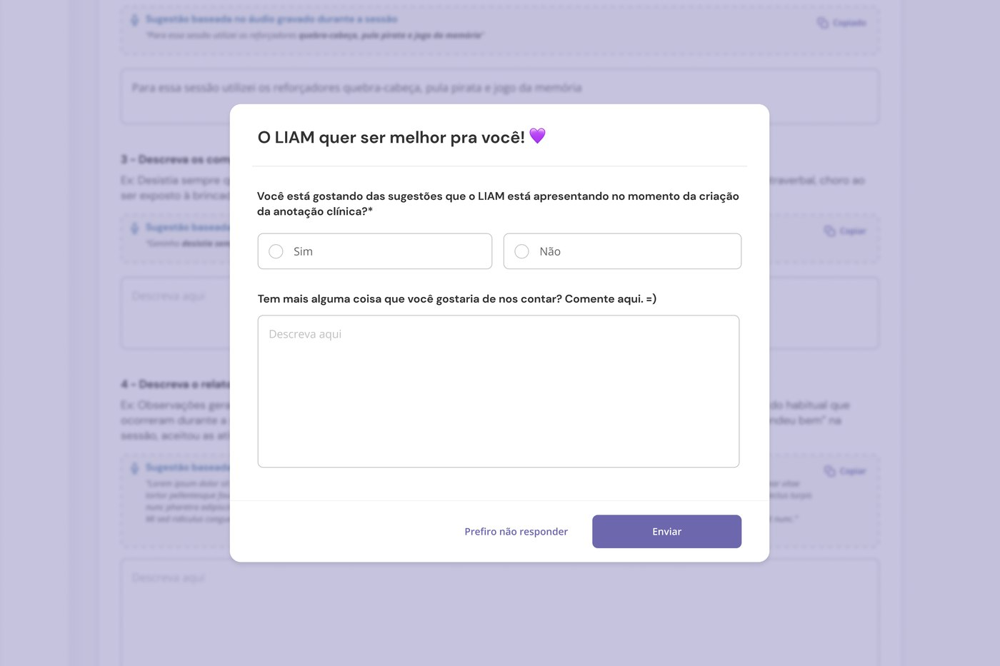

Every session at Genial Care generates a clinical record: what was targeted, what the child did, what changed. Therapists were writing that record from memory, after the fact, on top of a full day of sessions, which is exactly the kind of task that gets rushed, delayed, or thinned out under pressure. LIAM's job was to move the record-keeping into the moment it actually happens, instead of the moment there's finally time for it.
How I worked: designing an AI feature people can trust
The hard part of LIAM was never the model. It was earning the therapist's trust in something that drafts clinical language on their behalf. So the process was built around validating trust as much as usability.
-
Shadowed the real workflow first
Sat with the documentation therapists already do, where it happens, what fields are mandatory, where the two hours actually go, so the design fit the session instead of adding a step to it.
-
Prototyped the risky states, not the happy path
The demo-friendly flow is "record → perfect draft." I spent the design time on the states that decide trust: capture confirmation, upload failure, and the moment a therapist reads an AI suggestion that's wrong.
-
Tested drafts with therapists and clinical leads
Ran the AI-drafted output past the people who'd have to sign it, checking whether suggestions read as clinically credible and where they needed to override. The clinical team acted as domain reviewers throughout.
-
Built a feedback loop into the product itself
Rather than assume quality held, I shipped an in-flow prompt asking whether LIAM's suggestions were still good, so drift shows up in real usage instead of in a churned habit months later.
My role
Senior product designer end to end: workflow research, interaction and UI, prototype, and the trust-and-safety states that make an AI feature usable in a clinical context.
The team
Partnered with a product manager, an engineering squad building the AI pipeline, and the clinical team as the domain authority on what a report must contain.
Recording lives inside the work, not next to it
The intervention screen, with its programs, targets, and progress per skill, is where a therapist already spends the session. Adding LIAM meant putting the record button there, not in a separate "documentation" tool the therapist would have to remember to open afterward. A single mic control sits in the corner of the exact screen they're already using.

The intervention screen the therapist is already working in: recording starts from a single control here, not a separate tool.
Confirm the capture before asking the therapist to trust it
Once recorded, the note doesn't vanish into a black box. It surfaces as a waveform with its length, and an explicit send action. That pause matters more than it looks: a therapist just spoke clinical information out loud about a child, and the interface's next job is to prove it actually captured that before asking them to move on.

The captured note before it's sent, length and waveform visible, with a clear way to discard and re-record.
Uploads fail. The interface has to say so, plainly
A voice note recorded in a clinic doesn't always make it to the server on the first try. I designed the failure state as a direct, specific statement, "your voice note wasn't sent," with an obvious retry, instead of a spinner that quietly gives up or an error code the therapist has to interpret. For a tool handling clinical documentation, silent failure is worse than an ugly one.
Silent failure is worse than an ugly one, especially in a tool handling clinical documentation.

The failure state, stated plainly: what happened, and a direct way to fix it, no ambiguity about whether the recording is safe.
The payoff: a draft, not a form
This is what the two hours collapse into. LIAM turns the audio into a first draft of every required field: health check-in, reinforcers used, challenges observed, session summary, clinical discussion points, each one pre-filled and clearly marked as LIAM's suggestion, with a one-click copy into the real field. The therapist's job changes from writing the report to editing one: read, correct what's off, keep what's right, submit.
Nothing here submits itself. Every field stays editable, and the "Save" action stays with the therapist: LIAM proposes, the clinician decides.

The session-note form: every field carries a LIAM-drafted suggestion the therapist reviews and copies in, never submitted on their behalf.
Trust isn't a one-time decision. It's a loop
An AI feature that quietly gets worse, or quietly gets better, teaches people to stop trusting it either way. I added a lightweight feedback prompt directly in the flow: are you happy with LIAM's suggestions right now, yes or no, with room to say why, so drift in suggestion quality surfaces from real usage instead of waiting for a support ticket or a churned habit.

A direct feedback loop on the suggestions themselves: the mechanism that lets LIAM's output quality stay visible instead of assumed.
What I'd defend in a design review
The design decision underneath all five screens is the same one: an AI feature earns trust through visible mechanics, not through confidence. Show the capture before asking for the record. State the failure instead of hiding it. Mark every suggestion as a suggestion. Ask, explicitly, whether the output is still good. None of that is about making LIAM seem smart. It's about making it safe to rely on for something as consequential as a clinical record.
How it was measured: documentation time compares therapists' self-reported time to complete a session report before LIAM against the review-and-submit time with LIAM's draft in place.
Where this sits in the bigger picture
LIAM shipped after the family-facing app had already gone from 8% to 62% daily use. Once families were actually engaging, the constraint moved to the other side of the platform: the therapists producing the content families were now relying on. Same instinct, different audience: find where a person is spending effort on something that isn't the actual work, and compress it into a decision they can make quickly.